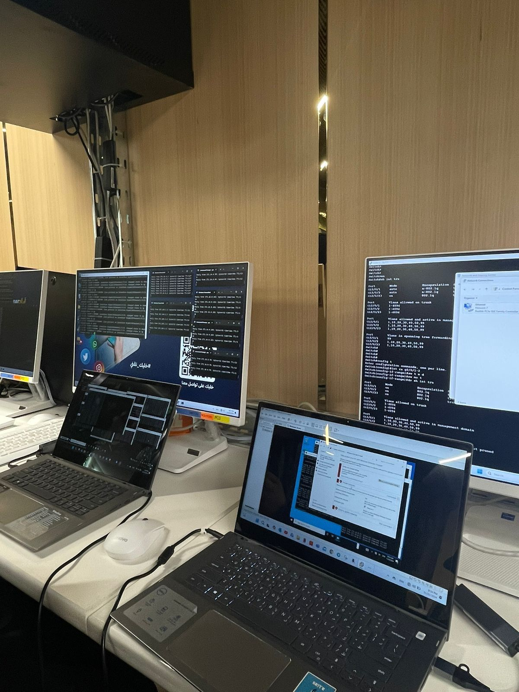
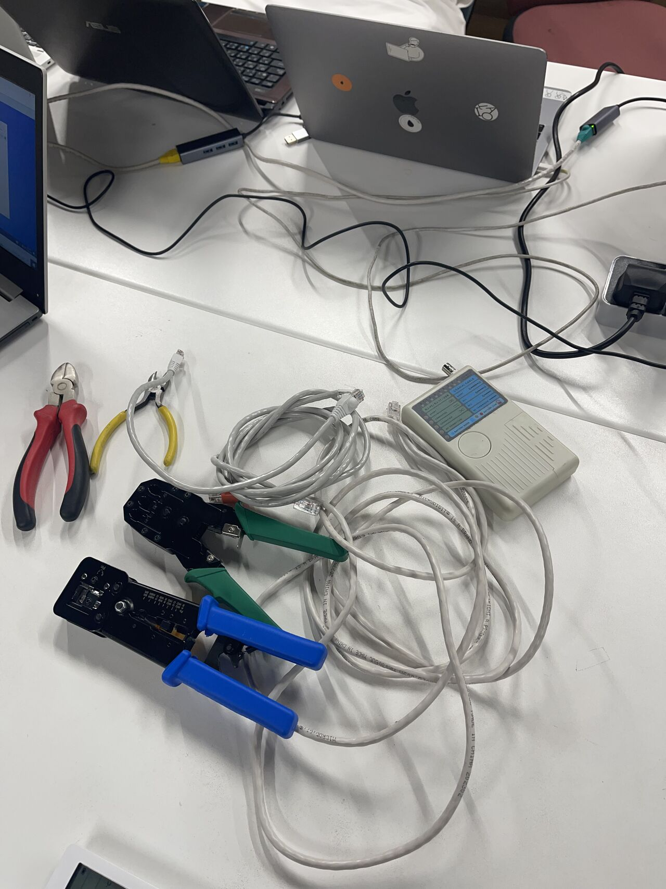

CCNA Network Setup & Security Lab
Hands-on enterprise-style lab focused on network installation, segmentation, firewall policy configuration, and secure infrastructure administration.
Build a secure connected lab
The project required connecting multiple devices, separating network traffic, controlling access between segments, and keeping services stable across mixed systems in a realistic lab environment.
Layered network security setup
The lab combined router and switch configuration, VLAN-style segmentation, firewall rule enforcement, and system administration practices to create a structured and controlled network setup.
What I configured and delivered
Device Setup
- Installed and prepared routers and switches.
- Verified physical connectivity across the lab.
- Organized device-level configuration workflow.
Network Segmentation
- Separated traffic for controlled communication paths.
- Defined cleaner boundaries between network roles.
- Reduced unnecessary cross-network exposure.
Firewall & Policies
- Configured FortiGate security rules.
- Applied access controls aligned with lab requirements.
- Validated traffic behavior against policy intent.
System Administration
- Worked with Windows Server and Red Hat Linux.
- Maintained service stability during configuration.
- Supported the lab through troubleshooting and testing.
Core implementation areas
Routing Setup
Configured routing behavior to support structured communication between devices and segments.
Traffic Segmentation
Separated lab traffic to improve control, clarity, and security boundaries.
Firewall Enforcement
Applied FortiGate policies to protect services and govern traffic flow.
Server Administration
Maintained Windows Server and Red Hat Linux systems used inside the lab.
From setup to security validation
Install Devices
Configure Network
Segment Traffic
Apply Policies
Test Connectivity
Document Results
Controls implemented in the lab
- Traffic segmentation for isolation.
- Firewall policy enforcement.
- Access control between systems.
- Administrative stability across servers.
- Connectivity validation after each change.
Next hardening steps
- Monitoring and alerting integration.
- Stronger logging and audit review.
- More granular access control rules.
- Redundancy and resilience planning.
- Expanded attack-simulation testing.
Components used in the lab
Network Devices
Routers SwitchesSecurity
FortiGate SegmentationSystems
Windows Server Red Hat LinuxOperations
Access Control PoliciesKey setup and validation screens

Lab Infrastructure
Network equipment prepared and connected for the practical lab environment.

Workstations
Client systems used to test connectivity, access, and operational readiness.

Connectivity Testing
Validation steps used to confirm proper communication and configuration results.

Cabling & Tools
Physical setup components used during installation and troubleshooting activities.
Delivered a structured secure lab setup
Completed a hands-on networking lab that combined installation, segmentation, firewall enforcement, and system administration into one controlled technical environment.